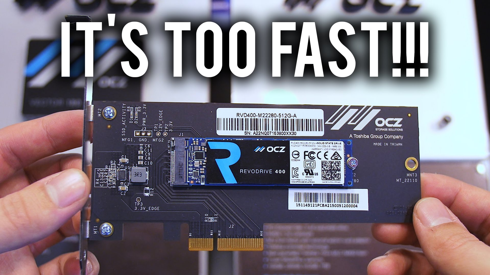

Memorijska Hijerarhija
Svakodnevno pisanje i brisanje podataka, svakodnevno downloadiranje torrenta na hard disk, nošenje prezentacija na USB-u, instaliravanje programa na računalu, sviranje muzike... svi ti podatci su na našim stvarima za pohranu (HDD, SSD, NVMe , USB itd.). Kako pohrana uopce funkcionira i koji su nam nacini za pohranit podatke, objasnit cemo ovdje.
• SATA - teoretske brzine do cca. 600MB/s, no ima problem sa latency-em jer nije direktno povezana sa CPU-om
• SATA-express - gotovi izumrli port koji nitko ne koristi zbog velikog konektora i manjak drivera; koristi 2 PCIe lanes direktno povezane sa CPU-om
• U.2 - koristi 4 PCIe lanes
• M.2 - 4 PCIe lanes; kompaktan; izrazito brz; koristi se u laptopima i noteboocima
Svi navedeni utori podržavaju više od jednog protokola za protok podataka. To znači da imamo više od jednog načina na koji PC komunicira sa controllerom u drive, za razliku od fizikalnog spoja. Za maximalne brzine, morate znati da vaša matična podržava tolike brzine i tehnologiju. Sve novije arhitekture od Z97 i X99 to podržavaju. Za primjer uzmemo jedan server koji se sastoji od specijaliziranog kućišta, ECC RAM-a, dual Xeon procesora, 10Gb mrežne kartice i naravno samih driveova. Konkretnije 24 komada Intel 1,2TB NVMe PCIe SSD sa teoretskim brzinama od 2500MB/s čitanja i 1200MB/s pisanja. Sve zajedno to ide u RAID 0 polje. Rezultati su iznenađujući. Pri sekvencijalnom čitanju od 512KB, brzine čitanja i pisanja su oko 10GB/s, što je skoro blizu maximalnih 16GB/s koje PCIe utor podržava.
